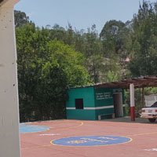

/td>
 |
 |
CAÑADA CANDELARIA Ñuu yute kandi ixoo nuu km usuario xiko uxi numero ixhi a ñuu.Eh nkuuva kuixa 1958.Yute kandi nkuva´a xhi kanu e ndaa ñaxivia a nkasai ñuulia e xiñañuu nskatai nduvayoso asi jayukuxaki e nyaa nada´a kivia en nkanda xhustei yute kandi e yute nkaxhustey xhi ixhii norte ixoo y yu´u kanu e candelaria xii a virgen de guadalupe a kasai viko´o ñaa u´u xoo febrero ee xaa nkandandukute te kuñanu ndava kasade nuu kakasikide anda te´ea nkaku C.Jaime Francisco Ayala Reyes nuu kakasikide ndii nkuva´a i jueves santo xo´o abril nde 1994 . E uxii unii xoo junio nde 1998 ñuu yute kandi ndaa a nkuu nucleo rural e 2010 nduu agencia municipal 4 xoo enero 2019 |